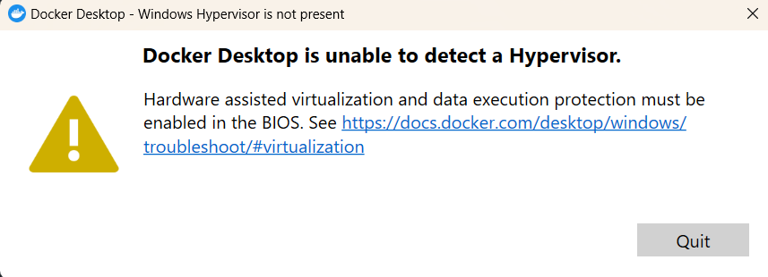
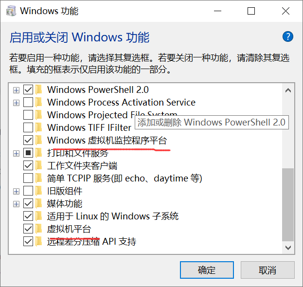
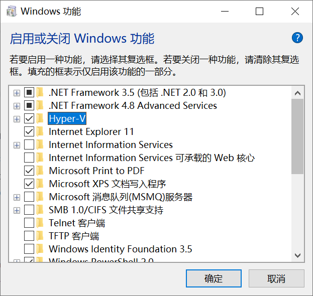
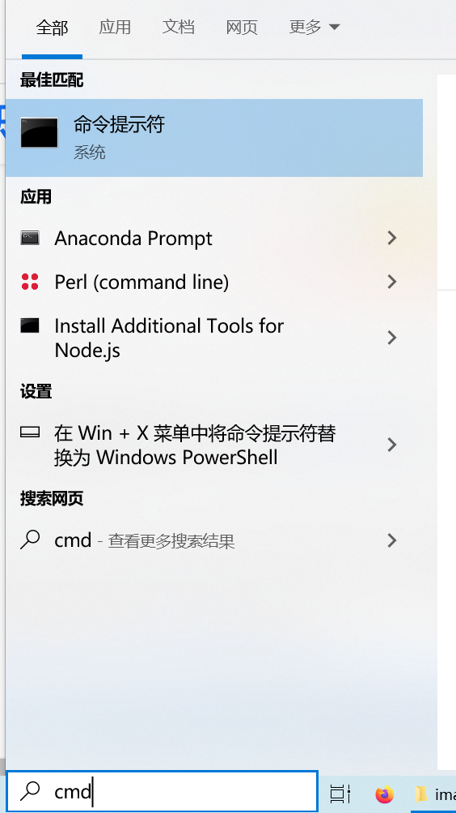

之前windows 10 安装了 docker desktop 成功， 也确实能用
但是， 安装了一下腾讯应用宝， 那家伙老提出 虚拟化影响，让我关掉， 我同意了。
于是 docker desktop启动就失败，大概就是说 找不到 unable to detect Windows Hyper-v/hypervisor。还给了个官方链接， 结果没解决。

于是 我经历一番周折， 终于打通了。
简单总结：
- 这台三星的 BIOS 里 VT 默认支持、没有启动/关闭，改不了
- 功能/feature里 虚拟机平台已经勾选， 也没用
- 功能/feature里 Hyper-V 没有， 需要添加， 家庭版默认没有（或者因为腾讯那个应用宝删了）
- 最后还要设置一下什么东东
- 完成
最后发现 docker Hyper V问题解决 这篇很完整了， 但最后有错误， 并且 安装 Hyper-V的命令行文件要关注公众号去领取， 比较坑。
BIOS enable¶
各平台的 BIOS 对 VT Virtualization technology/x 的支持方式不同。
幸运的是， 我用的三星 Samsung 电脑默认支持， 不幸的是， 也就是不能改， 我白白重启好几次， 里面就写了个 CPU VT-x support
Windows功能 虚拟机平台¶
控制面板 ---- 启用或关闭Windows功能 即 add or remove Windows features (特征翻译成了功能， 移除翻译成关闭， 或者说 英语单词用得不太贴切， 虽然是他们母语。) ---- 找 虚拟机平台 英语 Virtual Machine Platform
幸运的是，我的仍然已经勾选， 不知道怎么办

Windows功能 Hyper-V¶
又搜了一圈， 看到说 Hyper-V 要勾选上， 终于看到一个 电脑上缺的玩意， 官方说 家庭版没有， 但总有人解决问题的。

- 创建 hyperv.cmd 文件，添加以下内容。 注意 后缀名是 .cmd，创建成hyperv.cmd.txt 文件 就没法直接运行了 。
cmd
pushd "%~dp0"
dir /b %SystemRoot%\servicing\Packages\*Hyper-V*.mum >hyper-v.txt
for /f %%i in ('findstr /i . hyper-v.txt 2^>nul') do dism /online /norestart /add-package:"%SystemRoot%\servicing\Packages\%%i"
del hyper-v.txt
Dism /online /enable-feature /featurename:Microsoft-Hyper-V-All /LimitAccess /ALL
-
右键菜单，以管理员身份运行 -- 另外，你也可以在 cmd 里将上面代码逐行运行，不用建文件。
-
系统开始处理， 下载若干文件， 初看 好像反复下同一个文件， 其实是在下多个文件， 下多久看网速， 我和评论区说的都是两三分钟。 最后安装完成后， 问你是否重启（英文），反正就是问你 Y还是 n。
重启后，再次打开 启用或关闭Windows功能 就能看到 上图里的 Hyper-V 了，默认也已勾选。
我以为完成了， 结果还是没有~
cmd命令设置 和 重启。¶
windows 打开 command prompt 即 cmd 方法：
搜索框 - 输入 cmd - 命令行提示符/command prompt， 右键 以管理员运行

设置Hyper-V:
- netsh winsock reset // 执行完该命令一定要重启电脑再去执行下面的命令
- bcdedit /set hypervisorlaunchtype auto // 又要重启一次~~~才终于成功。
知乎回答里最后给的 Enable-WindowsOptionalFeature -Online -FeatureName Microsoft-Hyper-V -All bcdedit /set hypervisorlaunchtype auto 是有问题的， 把powershell 和 command prompt 混在一起了。